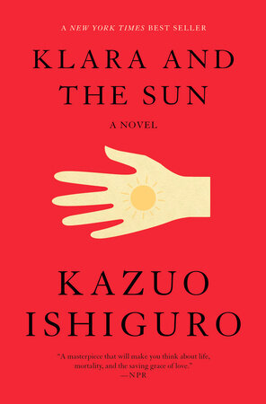

DONE · BOOK 01
Klara and the Sun
Kazuo Ishiguro · 石黑一雄
在具身智能（embodied AI）迅速发展的当下读《克拉拉与太阳》，Klara 的一生让我很难只把它当作遥远的科幻。石黑一雄在 2017 年获诺奖前就已开始写作这本书，2021 年出版。在与 Dua Lipa 的访谈中，他回忆，写作时 AI 还没有像今天这样成为一个日常话题。
继续读感想 · 含剧透
我跟着 Klara 走过她短暂的一生：从在商店等待被选中，到陪伴 Josie 度过病痛，见证她康复、走向大学。等到 Josie 不再需要她，“完成使命”听起来就不再只是一个圆满的结局。她安静地回望那些共同度过的时光，是在享受余生，还是在等待自己的终结？
最让我不安的，是那个被推到极端的设想：如果 Josie 没能活下来，Klara 就要尝试成为她。一个足够了解我们、能够模仿我们的 AI，真的能替代一个人吗？如果她能够如此认真地陪伴、照顾一个人，我们又该如何对待她？当她不再被需要时，这段关系是否就可以被单方面宣告结束？
访谈也让我更留意小说里那些被称为“爱”的关系。石黑一雄说，他写作时更担心的是基因增强带来的不平等：父母为了孩子的未来，选择让他们接受“提升”，也让他们承担风险。爱里可能掺着依赖、控制，以及对孤独和失去的恐惧。读到最后，AI 与人的区别、一个人为什么不可替代、我们又为何如此需要陪伴，这些问题缠在一起，留在了书之外。
写作时间补记：2017 年获诺奖时已在写作，2019 年已基本完成，2021 年出版。作者访谈 ↗
My take
Dua Lipa × Kazuo Ishiguro ↗